QBO从注册到报税全流程
注：资料来源于网络，全部内容免费公开，但禁止用于商业内容。
注册新账号
基本信息采集


这里有三个分流，我们按顺序看：
invoice设置
invoice个性化设置
这里要注意这里的invoice指的是customer invoice，也就是收款发票；付款在QBO中叫做bill, vendor invoice以及支付款项的receipes。
这里要开通线上收款功能，可以让收到invoice的商家直接支付，同时quickbooks也可以记录


这里因为是虚设，所以暂先跳过

payroall

bank connecting


右上角关闭，暂且skip
receipts

这个就是说用手机app实现随时随地拍照保存receipts，QuickBooks 会自动将你拍的收据与相应的支出记录匹配，这样你就可以轻松追踪开销并在报税时节省时间和税款。
功能用途总结：
这一步的目的在于让你下载 QuickBooks 的手机 App，这样你就可以：
- 拍下纸质收据（比如餐饮、办公用品发票等）；
- QuickBooks 会自动识别金额、商家名称、日期等信息；
- 自动把这些支出分类、录入到你的账本中；
- 帮助你记录费用、生成报表、以及报税时抵扣。
最后的用途或者其他常规询问


这里展示一些动画，之后就设置完成进入到了主页面
第一次进入主页面
第一次进入主页面会有一系列的引导：


右侧会弹出一个tasks任务窗口，可以看到要做的任务

这个步骤在AI系统中应当由agent直接像人一样不断提问或者喂过来。
基础设置
在任何流水入账前需要完成的一些基础设置。
Company Settings
公司信息、会计基础： Cash vs Accrual 、会计年度、时区、币种
Chart of Accounts
根据公司和一般业务情况设置COA（Chart of Accounts）。
User & Roles
这里要设置比如bookkeeper
收款与开票
invoice模板个性化
启用quickbooks payments（如果要线上收款）
Receipts Capture
手机app拍票据
Bank Feed
Quickbooks里有两套世界：
- 银行页 bank feed，银行和信用卡流水，没入账
- 账簿 books、GL、reports，已入账的entries、报表，由会计逻辑提供
为什么要分开呢？因为银行显示1000出账，系统无法确定：
- 还信用卡？
- 付给供应商？
- 老板提取？
- 买设备？
所以他不能立刻入账，必须由人（bookkeeper或企业主自己）点：
- match：对上已有交易，不产生新的entries
- add：新增交易
- record as transfer：创建或确认一笔账户间转账
- exclude：忽略，不入账
一般来说，企业主不会自己去match或者add，这个一般由bookkeeper来完成。企业主只关心经营数据。
QBO不会自动创建entries，除非你设置了规则。QBO会：
- 自动识别对方名称、金额、描述
- 提出智能建议，比如：看起来像上次的google ads付款，要不要分类为广告费？
- 但仍要人工点击确认
QBO的这种方式可以防止出错，同时节省人力
本页介绍一个一般的小型企业如何注册QBO并由bookkeeper完成一个常规的月度bookkeeping。
Bank Feed是所有会计记账软件最基础的功能，简单来说就是QBO自动从银行账户获取交易流水，从而实现一个实时的data feed。
Bank Feed环节主要有两个核心任务：
- 自动或手动import transactions
- match credit payment
Bank Feed的好处不必多说，就QBO而言，其bank feed的缺点也很明显：
- 导入信息中没有invoice number, reference number
- 无法auto match，需要人工确认
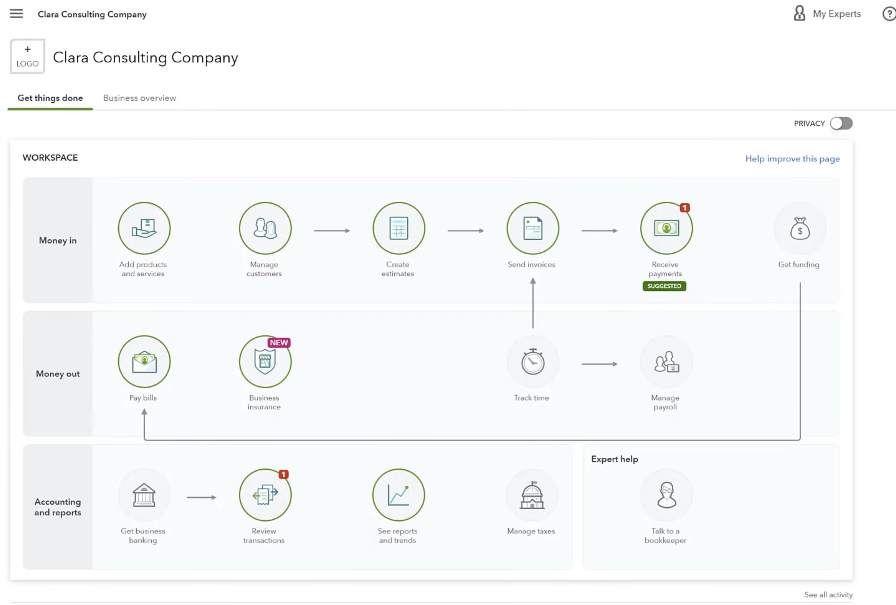
链接银行自动导入
连接银行，link bank，read only access只能查账
手动上传文件导入
如果不能连接银行，也可以upload transactions，导入的格式包括csv，qfx，qbo，ofx，或者txt；导入的时候要选择transactions发生的账户
csv中的文件有以下这些：

手动导入的时候需要手动填写csv的内容：
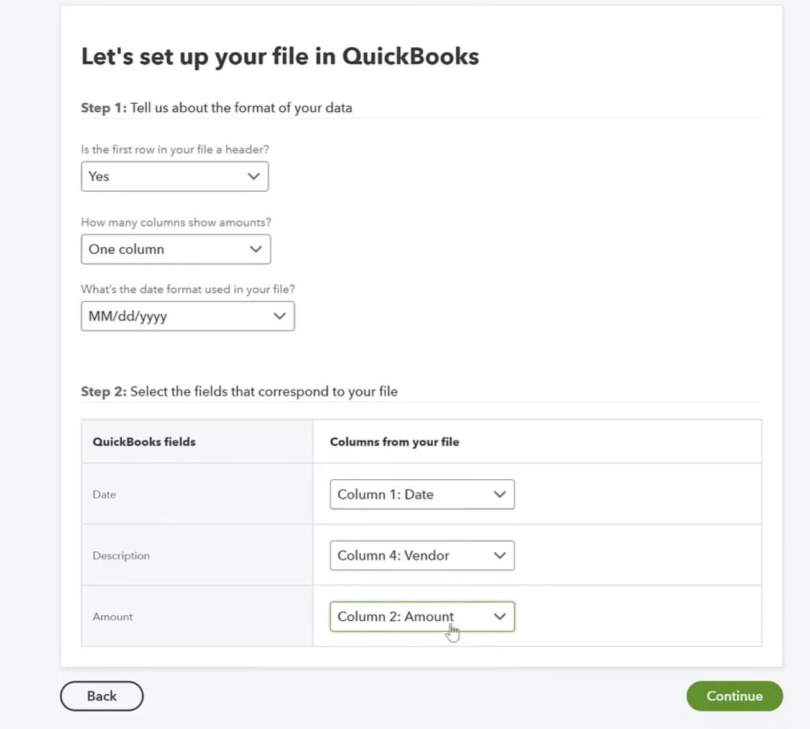
手动导入后，需要选择要添加的transactions：


添加完成后：

特殊场景与手工分录
Journal Entry
在会计理论中，Journal Entry就是会计分录，是所有交易记录的基础形式。具体来说，journal entry是double entries的一条记录。
在QBO中，Journal Entry是一个功能，让你手动创建或调整会计分录的。
手动录入一笔借贷平衡的交易。它是最基础、最通用的会计记录方式，用来记录没有自动交易来源的财务事项。在 QuickBooks 里，很多交易是自动生成分录的（比如发票、收据、费用、银行匹配等），但有时你需要手动调整账户余额，就用 Journal Entry功能（在QBO中是一个独立的功能）。
例如：你用个人钱帮公司付了 500 元办公用品费，但没通过公司银行账户。在 QuickBooks 里可以这样做：
| 科目 | 借方（Dr） | 贷方（Cr） |
|---|---|---|
| Office Supplies（办公用品费） | 500 | |
| Owner’s Equity / Owner Contribution（业主投入） | 500 |
。
Petty Cash
Petty Cash（备用金） 是公司手头的一小笔现金，用来支付一些小额、临时开销。
比如：
- 打印机墨盒、文具
- 快递费、停车费
- 小额补贴等
这些不值得每次都跑银行取钱或开支票，所以公司会留一点现金备用。
在 QuickBooks 中怎么处理 Petty Cash：
- 建立账户
- 打开 Accounting → Chart of Accounts → New
- Account Type 选 Cash and cash equivalents
- Detail Type 选 Petty Cash
- 命名为 “Petty Cash” 或 “备用金账户”
- 资金来源
-
当你从银行取出现金备用时，做一笔 Transfer：
- From: Bank Account
- To: Petty Cash
- 金额：比如 $200
👉 这表示你取了 200 元现金放在抽屉里。 3. 支出时 * 发生小额支出（如打车费 30 元）： * 用 Petty Cash 账户创建一笔 Expense。 4. 现金用完再补充 * 再从银行转一笔钱到 Petty Cash。
💬 最终效果：
Petty Cash 就像一个小型“现金钱包”，在账上独立核算、透明记录。
举例来说：
🪙 Scenario 1: Withdraw cash from bank to create Petty Cash fund
Situation:
You withdraw $200 from the company bank account and keep it as petty cash.
Journal Entry:
| Account | Debit | Credit |
|---|---|---|
| Petty Cash | $200 | |
| Bank Account | $200 |
Explanation:
- You moved money from your bank (decrease)
- to your petty cash (increase).
- Total assets didn’t change — only their form changed (bank → cash).
🧾 Scenario 2: Use petty cash to pay for office supplies
Situation:
You pay $50 in cash for office supplies (pens, paper, etc.) using the petty cash fund.
Journal Entry:
| Account | Debit | Credit |
|---|---|---|
| Office Supplies Expense | $50 | |
| Petty Cash | $50 |
Explanation:
- The Office Supplies Expense increases (debit = expense up).
- Petty Cash decreases (credit = cash down).
- This reflects you spent cash on a business expense.
💵 Scenario 3: Replenish the petty cash fund
Situation:
You notice only \(150 cash is left, so you withdraw another **\)100** from the bank to top it back up to $250 total.
Journal Entry:
| Account | Debit | Credit |
|---|---|---|
| Petty Cash | $100 | |
| Bank Account | $100 |
Explanation:
- Petty Cash increases by $100 (you physically added more bills).
- Bank Account decreases by $100 (you withdrew from it).
Bank Feed总结

导入流水后你就能看到公司相关的银行账户、credit card的信息了。credit card中特别展示matched transactions。
这里要特别注意，QBO导入transactions后没有记录invoice或者流水的一些编号信息如reference number，这是很多人吐槽的一个比较麻烦的点，需要bookkeeper自己想办法去优化。换句话说，导入的transactions和银行账户连接在一起，而不会默认地自动匹配已经存在的invoice, bill, payment；bookkeeper需要使用第三方插件或手动设置规则来进行自动化导入。又或者，通过excel或csv导入，在导入前预处理数据。
对于需要定期导入的公司，需要通过QBO API实现批量导入时附带自定义字段。
QBO官方给出的理念是：系统会suggest match而不是auto match，是为了避免错误关联，并让财务人员对没比入账的真实性进行有效确认。
对于大型公司，根据GAAP和SOX（Sarbanes-Oxley Act, only for 上市公司），所有的财务信息必须可靠、可验证、可追踪。如果没有经过人工确认，可能违反要求。然而，大多数的普通小企业并不需要接受外部审计或GAAP（除有融资方、银行贷款的需要外部审计），大多数QBO用户使用cash basis & tax basis记账，他们完全可以自动匹配流水甚至直接导入bank feed当账本用都行。
QBO的trade off是做了一个Audit Trial，即Intuit为了保证系统日志具备：谁添加、谁匹配、何时根据什么条件、是否可回溯来预防audit。此外，QBO用户数量巨大，且并非仅针对美国市场，为了保持全球统一的产品结构，QBO放弃了自动匹配的可能性，来规避风险。
关于自动匹配功能，可以参考Xero的流程。
Classify Transactions
这一步骤开始是Bookkeeper的主要工作内容。完成注册和银行设置后，QBO就可以自动获取流水了。然而，Bank Feed进来的流水是非常粗的，他没有：
- 没有match记账凭证如invoice, receipes
- 没有被分类到chart of account
因此，每一条bank feed都必须要经过两步判断：
- 业务凭证检查（book-side）：检查该transaction是否对应某张invoice, bill, expense, receive payment, deposit... 保证transaction和账务凭证一一对应。这是必须做的事情。
- 银行流水检查（bank-side）：如果没有匹配，则必须categorize，手动选择chart of accounts和税务类别，确保交易最终能被计入财务报表。
检查流水是否齐全
首先针对每个银行账户检查是否涵盖了一整个月的transactions，在for review中目测就可以，如果一个月的月头到月尾的信息都有，那一般就是齐全的。
对于手动导入的情况，还要额外检查条目数是否能对上。

这个时候的状态叫做“for review”，我们需要对每一条进行分类整理，一条一条放入我们的book中：
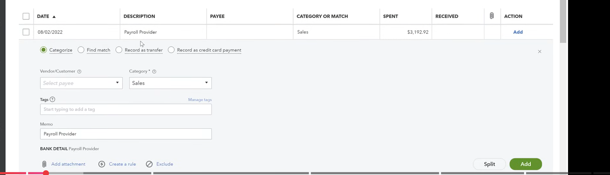
图中展示的是payroll，如果公司使用外部的工资系统，实际付款情况只在银行里出现，就需要手动categorize。这里区分一下vendor和customer，一个代表支出一个代表收入。具体的Match和Categorize下面会讲到。
Match
Book-First Match
这里要注意，在QBO中，match的交易不需要再categorize。为什么呢？因为在QBO中，invoice, bill, expense, receive payment, deposit这些都是用户在QBO中主动或者自动录入的业务活动，通常先于银行流水出现。因此，对于可以match的内容，其流程一般如下：
先发生业务 → 在 QBO 里建立凭证 → 银行账户实际收付款 → 银行流水同步进来 → QBO 提示你去 Match。
例如：
- 你开了一张 Invoice（客户欠你钱）；
- 几天后客户打钱；
- 银行流水进来；
- QBO 发现金额、日期、客户匹配 → 自动建议 Match。
因此，QBO会对比凭证和流水，比如：
| 账面凭证（Book） | 银行流水（Bank） | 匹配条件 |
|---|---|---|
| Invoice（应收账款） | Deposit（入账） | 金额、客户、日期 |
| Bill（应付账款） | Expense / Payment（支出） | 金额、供应商、日期 |
| Transfer（转账） | Transfer（银行转账） | 来源账户、目标账户、金额 |
一旦匹配成功，系统认为：
这笔“账面交易”已经通过银行流水实现，
因此银行流水不再需要额外分类（Categorize），
因为凭证已经定义了所有的会计分录。
这里要注意，每个凭证都已经自带会计科目（Chart of Accounts）了：
| 凭证类型 | 对应方向 | 会计分录逻辑（自动生成的） |
|---|---|---|
| Invoice（发票） | 收入类 | Debit: Accounts ReceivableCredit: Income Account（销售收入科目） |
| Receive Payment（收款） | 收入实现 | Debit: Undeposited Funds / BankCredit: Accounts Receivable |
| Bill（供应商账单） | 费用类 | Debit: Expense Account（费用科目）Credit: Accounts Payable |
| Expense（支出） | 费用类 | Debit: Expense Account（费用科目）Credit: Bank Account |
| Deposit（存款） | 收入确认 / 资金入账 | Debit: Bank AccountCredit: Income Account（收入科目） |
每个凭证你在录入时，都会选择相应的 Account （chart of accounts 项目）：
- Invoice → 哪个收入科目（Sales / Service Income）；
- Bill / Expense → 哪个费用科目（Rent, Office Supplies）；
- Deposit → 哪个收入来源；
- Payment → 哪个银行账户收钱。
也就是说，这些凭证 本身已经“分类完了” 。
Bank-First Match
然而，我们上面说的Book-First方式，虽然规范，但很多小企业、自雇人士却不爱如此遵守。他们不在意是否要先开发票，他们很多的业务都是先出现交易，后补发票。这种情况下，我们不能直接照本宣科。
现实中，很多小企业没有提前建立发票或账单：
- 餐厅、咖啡馆：每天银行入账几十笔；
- 自雇顾问：客户直接打款；
- 电商：Stripe / PayPal 每天入账。
这些情况都是“先有钱，再补凭证”。
QBO 的设计初衷就是：
无论是先有银行流水，还是先有账面凭证，最终都能合并到同一套账里。
如果你先有银行流水，然后才建立 book-side record（比如 invoice），QBO 仍然可以匹配。
🧩 流程示例：Bank → Invoice → Match
- 银行流水导入：Deposit $1,000
- 你随后在 QBO 新建一张 Invoice（客户 ABC Co.，金额 $1,000）
- 返回 Banking 页面 → QBO 自动识别到金额、客户相同
- 系统提示：“1 potential match found”
- 你点击 “Match” → 完成对账。
👉 这叫做 Post-facto Matching（事后匹配） 。
所以，顺序并不是硬性要求，只要金额、日期、客户匹配，QBO 都能连上。
Categorize
没有凭证怎么记录？
银行流水进来 →
是否找到匹配的凭证？
├─ ✅ 有匹配 → Match → 使用凭证的会计科目
└─ ❌ 没有匹配 → Categorize → 你手动分配会计科目
举例来说：
| 场景 | 原因 | 你需要做的事 |
|---|---|---|
| 💵客户直接转账，没有提前开发票（Invoice） | 银行看到钱进来，但账上没有应收记录 | Categorize → 选 “Sales Income” |
| 🧾刷卡消费、自动扣费、银行费用 | 没有 Bill 或 Expense 记录 | Categorize → 选 “Bank Fees / Utilities / Rent Expense” 等 |
| 🏦账户间转账 | 银行看到出一笔、入一笔，系统不知道这是一笔转账 | Categorize → 选 “Transfer” 并在另一账户匹配 |
| 🪙老板私人注资 / 提现 | 银行流水没有凭证对应 | Categorize → 选 “Owner’s Equity / Owner’s Draw” |
| 💳信用卡还款 | 没有记录 Payment | Categorize → 选 “Transfer” 或 “Credit Card Payment” |
又比如在真实经营中，有很多“非标准交易”：
- 银行自动扣电费；
- 客户预付款；
- 小额现金支出；
- 业主资金往来。
这些通常不会先建账（因为太零散），
所以银行流水进来时，系统找不到对应的凭证。
这时 Categorize 就成了唯一的解决方案。
👉 你可以把 Categorize 理解为：
一个安全兜底机制（fallback） ，
确保无论账面有没有凭证，所有银行流水最终都能被正确入账。
对于先走账后补票的情况，即我们刚才提到的bank-first，一般做法是先保留未分类状态（for review），在补建凭证后再match。
QBO Bank Rule & auto-add

虽然QBO本身不做自动匹配，但是每个小企业都会有主营业务，因此自然会有非常重复的内容，比如每个月发的工资之类的。对于这种高重复性的东西，我们可以创建bank rule，当流水符合设置好的rule的时候，系统就会自动根据你提前设置好的内容把transaction导入到book中。
比如，我们可能经常收某一家公司的咨询费，我们就可以设置一条incoming consulting payments rule.
我们可以设置"auto-add"功能，当银行流水符合这条规则的时候，系统就会自动将交易添加到book里，而不需要手动点击add或confirm。
auto-add的流程如下：
# 未开启auto add的情况
银行流水进入 For Review →
系统检查是否有匹配凭证或规则 →
用户点击 Add / Match →
交易入账到 In QuickBooks
# 开启了auto add的情况
银行流水进入 For Review →
系统发现符合某条 Bank Rule →
✅ 自动 Add →
直接入账到 In QuickBooks（无需人工操作）
auto add可以让规则不仅仅是分类，还直接入账。
这里要注意，如果规则条件太宽，那么可能会误分类；一旦错误入账，还需要手动撤销。因此对于稳定、重复交易（如某一个特定服务的银行订阅费用）才比较适合开启audo add，其他不那么确定的还是要人工确认后再做比较好。
适合开启auto add的比如：
- “BANK FEE” → Bank Service Charges
- “GOOGLE ADS” → Advertising Expense
- “STRIPE PAYOUT” → Sales Income
上述内容在同一规则下的交易几乎不会有例外。
不建议开启的情况比如：
- 交易内容多样（如客户付款、不同来源）；
- 可能需要人工核对发票、客户、金额；
- 比如 “Deposit from Client” 类的流水，有时会对应不同发票。
添加rule后可以看到：
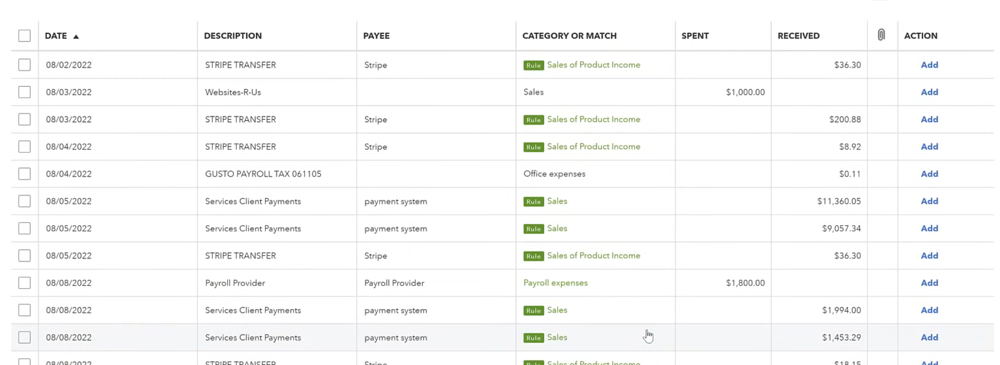
符合rule的已经被自动标记了。上图中的例子是没有添加auto-add的，用户确认没问题后点击add就可以直接添加到book中。
Create new Vendor
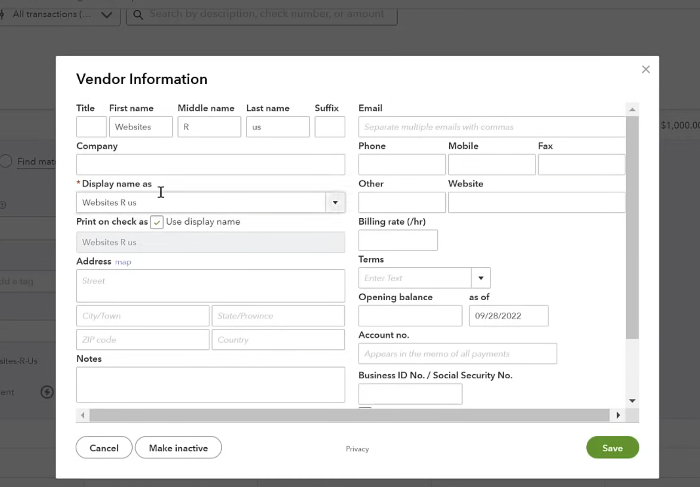
这一步一定要慢慢做，因为填错的话会导致后面所有相关操作全部出错。
这里有一点要特别注意：payroll provider也算vendor。因此当你给员工付工资的时候，比如你通过ADP、Gusto这种工资代发服务公司发工资，你的公司这里相当于是有一笔支出的，这笔支出流向的对象自然也被记录为Vendor。
这里顺便提一嘴，为什么不用手动记录customer呢？因为一般收入都有明确的来源，比如invoice或者receipe，所以系统可以自动match。
配对信用卡还款交易
Credit Card在QBO中是一个独立账户。
- 它的交易通过 Bank Feed 或 Expense 表单录入；
- 这些交易会出现在 Banking → For Review ；
- 通过 Categorize / Match 入账后，形成费用与负债；
- 还款时在 “Banking” 中记录 Transfer 到信用卡账户。
📘 记忆口诀：
💳 消费进 Credit Card（负债增加）
💸 还款出 Bank Checking（资产减少）
🔗 通过 Categorize / Match 把两边对上

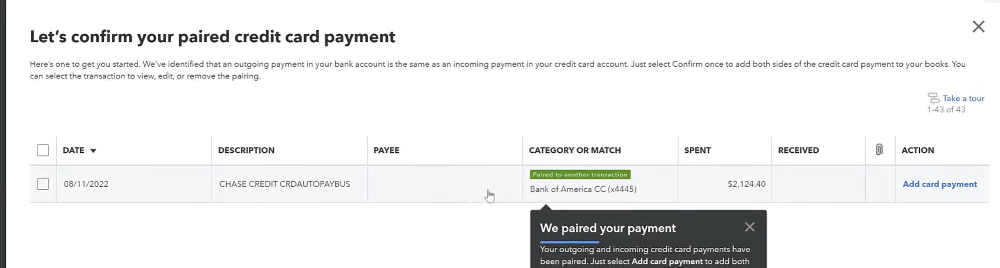
这里其实就是说Quickbooks检测到：
- 你的银行账户有一笔支出
- 你的信用卡账户有一笔金额相同的入账
Quickbooks识别出这两笔交易是同一件事的两面：一个支出、一个入账，于是提示你去确认配对；配对后，这笔还款会在账本中正确反映为从银行账户转出资金到信用卡的动作，而不会重复计算。
为什么这里要进行该动作呢？因为公司通常会给员工或管理层发放公司信用卡，用于支付公司费用，比如差旅费、机票、酒店、设备采购、广告支出、SaaS订阅等。这些刷卡消费都是公司开支，而每个月公司都会从公司的银行账户（比如BOA）中去还这张信用卡。
由于跨越还款非常常见，所以一般会这样记录：
在刷信用卡的当下，公司已经发生了费用，所以要立即入账：
| 日期 | 账户 | 借方（Debit） | 贷方（Credit） |
|---|---|---|---|
| 10/25 | 费用（Advertising Expense） | $1,000 | |
| 10/25 | 信用卡负债（Credit Card Payable） | $1,000 |
意思是：公司花了 $1,000 做广告，但这笔钱暂时由信用卡垫付，公司还欠银行这笔钱。
下个月还款的时候，记录偿还负债：
| 日期 | 账户 | 借方（Debit） | 贷方（Credit） |
|---|---|---|---|
| 11/10 | 信用卡负债（Credit Card Payable） | $1,000 | |
| 11/10 | 银行账户（Bank Checking） | $1,000 |
意思是：用银行账户的钱偿还信用卡负债，不影响利润，因为费用早在刷卡时已确认。
在 QuickBooks 中：
- 10月刷卡 → 这笔会出现在“信用卡账户（Credit Card Account）”中作为支出。
- 11月还款 → 会出现在“银行账户（Bank Account）”中作为转出。
- 系统会帮你把两笔连接（match）起来，作为偿还信用卡负债的内部转账（Transfer）。
系统match两笔entries后，entries记录和总账不变，那么match的意义是什么？
我们来回顾一下刚才的流程，首先我们从银行流水中下载transactions，这些transactions会形成bank feed rows（待处理行）：此时这些transactions还没有入账。只有当你在银行页点击match、confirm、add、record as transfer时，才会把待处理行变成账上的一笔交易。如果你不点，那么就不会入账。
Review Work
当你完成一个账户的记账后，该bank账户下会显示如下内容：

这就表示该尾号为2333的banking账户的bank feed transactions已经全部被处理完，该账户下的每一条都被match或者categorize了。
在开始正式的reconcile之前，建议快速review一下last month的profit and loss：

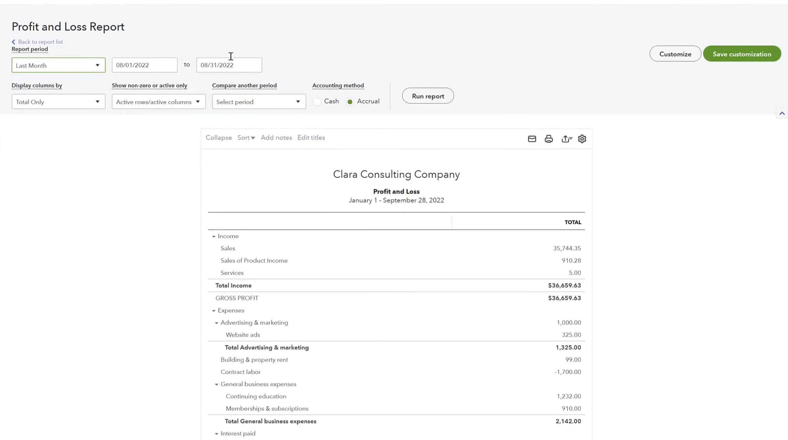
看看这里头有没有哪一条是空的，哪一个明显有问题。这里考验的就是bookkeeper的navigation experience，做的越多判断的越快。这里还有一点就是这些结果都是刚才操作完所有的bookkeeping后生成的，所以操作的过程中bookkeeper的大脑中会留一个概念。
如果有疑问的话直接点击右侧的数字，就能跳转到该数字具体的来源上：

月末对账
Reconcile
Bank Reconciliation就是银行对账。
在美国，小企业大多数使用“Calendar Year”（自然年）：
- 每个月做账 Monthly Closing
- 每季度报税 Quarterly Taxes
- 每年报年度报表 Annual Report
所以Quickbooks默认以自然月为周期，月末会让你：
- 对账 Reconcile
- 生成月度利润表 P&L
- 生成资产负债表 Balance Sheet
当然，我们这里指的月末有时候也是次月月初的意思。因为只有一个月彻底结束，你才能看到这个月完整的流水。同时reconcile必须要等银行的bank statement出来才能做，不能只靠bank feed。因为bank statement相当于最终的官方账目，有ending balance。
QBO 的 Reconcile 页面其实是把这两边核对起来：
| 银行账单 | QuickBooks |
|---|---|
| 起始余额（Beginning Balance） | 上次 Reconcile 的结束余额 |
| 结单余额（Ending Balance） | 本次对账目标余额 |
| 银行记录的交易 | QBO 分类后的交易 |
| 差额（Difference） | 应为 $0.00（完全一致） |
只有当 Difference = 0.00 时，QBO 会显示 ✅ Reconciled Successfully。
在QBO中，我们回到银行界面：

点击Go to bank register，然后点击右上角的reconcile：

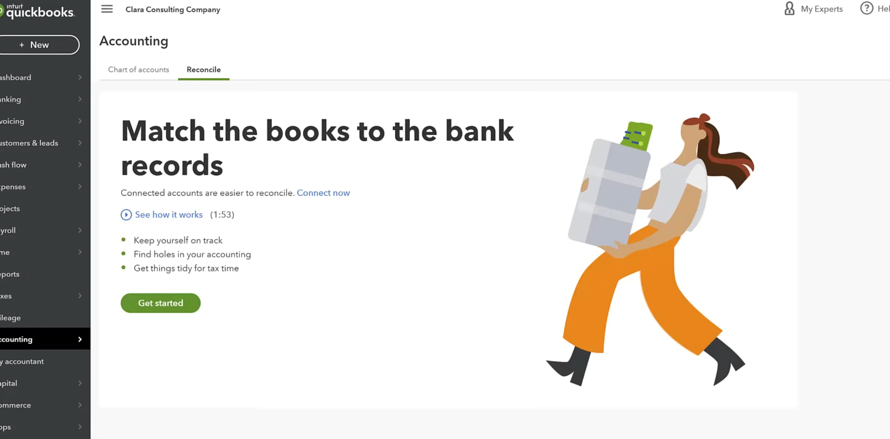
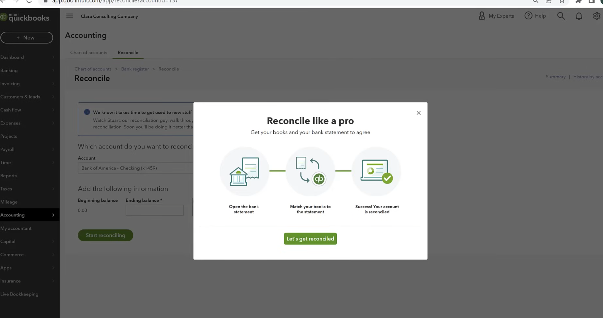

这个时候：

QBO就会自动整理好，然后我可以看到右上角这里有个Difference，那么就是不可以的，是有问题的。
调整完毕后，最终我们看到Difference为0，那么就算是成功reconcile了：
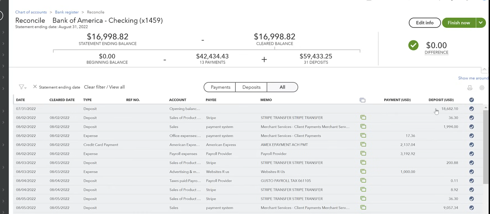
上面的绿色重叠小图标的意思就是我们刚才bookkeeping时记录在了系统中的。
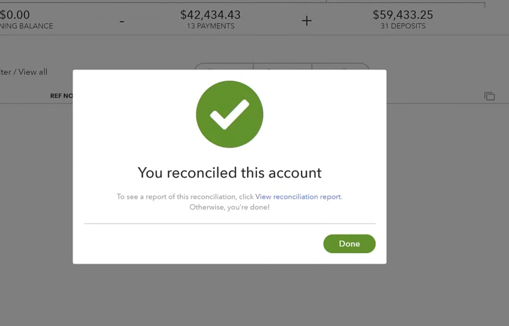
至此，我们便完成了月度的reconcile工作。
初步Account Review
完成Reconcile后，bookkeeper还要进行account review。
Reconcile不关心分类，只看金额。所以Reconcile只能确认QuickBooks 账簿里的交易记录 = 银行结单的金额和日期完全一致。换句话说，Reconcile能回答“这些钱到底有没有在银行里真实发生、金额对吗？”，但不能回答“这些钱是花在什么科目上、费用类型对不对？”
这里很多人会混淆说：Account Review不应该由Accountant来做吗？
在现实情况中，bookkeeper一定要在每个月的reconcile后进行初步的account review。
从记账到报税
三种财务专业人士
Bookkeeper每月、每季度进行bookkeeping，确保books are clean。
对于所有企业来说，无论大小，报税都是一个无法逃避、必须重视、不能随意对待的事情。我们接下来看一下小企业一般如何完成记账到报税的流程。
一般记账部分由bookkeeper来做，这是没有疑问的。然而，从booking到报税，在美国呈现出了五花八门的形式。我们首先来回顾一下美国中小企业通常会用到三类财务专业人士：
- Bookkeeper，专门做账、清账、理账的人
- Accountant or CPA
- Enrolled Agent (EA)，专门做报税的人
这里要注意，并非所有企业都会请Accountant/CPA，也并非所有企业都会请人报税！由于很多小企业并不会请一个accountant来做账，所以整个流程会存在很多重叠区域。
我们需要先记住以下结论：
- Bookkeeping不需要任何资质
- Bookkeeper不能代人报税
- 小企业可以自己报税（不请任何人来做）
- EA可以报税，但不能签财务报表
- CPA可以签财务报表和报税
从成本来说：CPA > EA > Bookkeeper
结合上面的信息，每个企业都可以根据自身情况选择合适的报税方法，比如：
- 由Bookkeeper理账，EA报税
- 由Bookkeeper理账，Accountant对账，EA报税
- 由Bookkeeper理账，CPA对账加报税
- 由Bookkeeper理账，企业自己报税
- 企业自己理账报税
都有可能。
Cash Basis & Accrual Basis
我们要注意，对于非GAAP的小企业，即cash-basis的小企业，在大多数情况下完全无需请Accountant/CPA。
现金制省去了：
- 应收账款（A/R）
- 应付账款（A/P）
- 预提与摊销
- 折旧复杂分录
账面上只有：
银行进出 → 收入 / 支出
所以只要 Bookkeeper 能正确 categorize + reconcile，账就干净。
📘 这时 CPA 的“专业调整”空间很小。
美国税法明确规定：
- 过去三年平均年收入小于2500万美元
- 没有复杂存货结构
- 不是受限行业
符合上述要求的企业可以用cash basis。
一般LLC、个人企业等都使用cash basis。
然而，虽然大多数企业都是小型企业，依然有大概一半的企业采取了accural basis记账。
在权责发生制（Accrual Basis）下，你必须：
- 在 收入“赚取”时 （而不是收款时）确认收入；
- 在 费用“发生”时 （而不是付款时）确认支出。
例如：
- 你发出一张 invoice → 马上记录收入 + 应收账款（A/R）；
- 你收到一张 supplier bill → 马上记录费用 + 应付账款（A/P）。
📘 所以 Accrual 比 Cash 多了两类核心记录：
- 应收（A/R）
- 应付（A/P）
这些都属于 bookkeeping 范畴。只不过相对于cash basis，对bookkeeper的要求会更高一些。换句话说，即便企业采用accrual basis记账，依然不是必须请accountant/CPA来做账。
Account Review
EA、Bookkeeper、甚至企业主本人，只要懂会计原则，都可以合法执行 review 和调整。
我们可以做以下对比：
| 任务 | Bookkeeper | Accountant / EA | CPA（或 EA with advanced accounting） |
|---|---|---|---|
| 月度分类核对 | ✅ 常做 | ✅ 可复核 | ✅ 可复核 |
| 检查 uncategorized expense / income | ✅ 常做 | ✅ 复核 | ✅ 复核 |
| 应收应付核对（A/R、A/P aging） | ✅ 常做 | ✅ 复核 | ✅ 复核 |
| 折旧调整 | ⚙️ 可在指导下做 | ✅ 常做 | ✅ 常做 |
| 预提/递延分录 | ⚙️ 可执行简单的 | ✅ 常做 | ✅ 常做 |
| 税务折旧、应计利息、年终税调 | ❌ 不推荐 | ✅ 可做 | ✅ 常做 |
| 编制正式财报（for loan / investors） | ❌ | ⚙️ 可准备草稿 | ✅ 必须由 CPA 签署 |
| 报税支持（trial balance → return） | ⚙️ 协助 | ✅ 主导 | ✅ 可主导 |
Adjusting Entries
Adjusting entries（调整分录）通常指在会计期末，为了让账簿符合权责发生制（accrual basis）或税务口径，对收入、费用、资产、负债等科目进行修正的分录。
Adjusting Entries 涉及：
- 会计估计（Accounting Estimates）
- 比如折旧年限、摊销期、坏账准备比例。
- 属于“专业判断”，如果错了，会影响净利润。
- 税会差异（Book-Tax Differences）
- 比如税务折旧 vs 财务折旧；
- Expense accrual timing；
-
Deferred tax 处理。
👉 EA 或 CPA 更熟悉这些细节。 3. 报表一致性（Consistency） * 调整分录要和 trial balance、reconciliation、报税表一致； * Accountant 通常用 working papers（工作底稿）追踪。
常见包括：
- 折旧（Depreciation）
- 预提费用（Accrued Expenses）
- 递延收入（Unearned Revenue）
- 预付费用摊销（Prepaid Expense Amortization）
- 应计利息（Accrued Interest）
- 坏账准备（Allowance for Doubtful Accounts）
- 税务调整（Book-Tax Differences）
这些调整是从 trial balance（试算平衡表） 到 税务可用财务报表（tax-ready books） 的关键环节。
该步骤一般由EA或Accountant/CPA来完成。在这件事情上，EA 与 Accountant 的区别不在“能不能调整账”，而在于 EA 调整的角度更偏向税务正确性 ，而 Accountant / CPA 调整的角度更偏向财务报表展示（GAAP）正确性 。
Close Books
Close Books的意思就是锁定一个会计期间（比如一个月、一个季度或者一年）的财务定稿，禁止之后再随意修改。
- 设置 Closing date 与密码，防止回溯改账
- 导出/归档：Trial Balance、G/L、Reconcile reports、Audit Trail
- 备份报表包（P&L、BS、Cash Flow、A/R & A/P Aging、固定资产台账等）
在QBO中，一旦close books，如果有人试图修改该期间内的交易，QBO就会提示输入管理员设置的密码。
Close Books是出年底财务报表和报税的根本前提。
Financial Reports
内部管理报表
关于是否要做一个CPA签字版本的财务报表，取决于企业的具体需求：
| 报表用途 | 是否必须 accountant 复核 | 说明 |
|---|---|---|
| 内部管理 | ❌ 可由 Bookkeeper 完成 | 小企业常见 |
| 税务申报 (Form 1120, 1065) | ⚙️ 推荐 EA / Accountant 做调整 | 因为需税务一致性 |
| 银行贷款、投资人、外部用途 | ✅ 必须由 CPA 审阅或签署 | 会计鉴证要求 |
Compilation, Review, Audit
Compilation必须由CPA来做。Compilation是一种整理加声明的工作，没有保证。换句话说，就是让CPA做一个看起来很专业、有格式、能让银行接受的财报，但并不能保证财报的可信度。CPA在做compilation的时候，并不检查财报，也不核实财报，即不证明财报是否正确。
Compilation只是一个编制报告，常用于银行贷款。CPA对该报告没有保证（No Assurance）。
一般来说，CPA签字的财报包括：
| 服务类型 | 中文名称 | CPA 是否签字 | 提供保证程度 | 常见用途 |
|---|---|---|---|---|
| Compilation | 编制报告 | ✅ 是（签署编制报告） | ❌ 无保证（No assurance） | 银行、内部用途 |
| Review | 审阅报告 | ✅ 是（签署审阅报告） | ⚠️ 有限保证（Limited assurance） | 投资人、贷款机构 |
| Audit | 审计报告 | ✅ 是（签署审计意见书） | ✅ 高保证（Reasonable assurance） | 上市公司、监管机构 |
小企业一般只需要compilation就够了。甚至对于不需要银行贷款或投资的小型企业，compilation也是不需要的。
报税步骤
准备工作
完成财报后，企业就可以准备报税了。我们再次回顾一下记账到报税的流程和负责人：
| 步骤 | 内容 | 谁负责 |
|---|---|---|
| 1️⃣ 记账 | 日常收入支出录入、对账（QBO 完成） | Bookkeeper / Accountant |
| 2️⃣ 生成财报 | P&L、Balance Sheet、Trial Balance | Bookkeeper / Accountant |
| 3️⃣ 税务调整 | 折旧、不可抵扣费用、税务调整项 | EA / CPA |
| 4️⃣ 填报税表 | Form 1120（或 1065、1040-Schedule C） | EA / CPA |
| 5️⃣ 提交申报 | e-File 或纸质申报给 IRS & State | EA / CPA |
下面我们以EA为例，看一下一个EA针对小企业（LLC/S Corp/C Corp）的一年典型工作内容
Tax Planning
📅 时间：全年
🎯 目标：帮助企业税务策略
这一步骤并不需要年底就做，一般就是进行一些税务规划，比如分析收入结构、支出策略、股东分红、工资结构、税负优化等，然后输出税务策略建议书（Tax Planning Report）
Tax Preparation
📅 时间：1 月上旬 – 1 月中旬
🎯 目标：收集所有报税资料，确认账务基础。
EA 的工作：
- 向客户发送 Tax Organizer / Checklist （税务资料清单）
- 确认企业类型（C Corp / S Corp / Partnership）
- 获取以下资料：
- QBO 账本或 Trial Balance
- 银行对账单、信用卡账单
- 去年的报税表（Prior Year Return）
- 固定资产清单（Depreciation Schedule）
- 贷款利息、工资、销售税等文件（1099、W-2、Sales Tax Filing）
- 检查是否需要申请延期（Extension）
输出结果：
- 完整的客户资料包（Tax Organizer Returned）
- 初步确认财年截止日期（Fiscal Year End）
Bookkeeping Finalization
📅 时间：1 月中旬 — 2 月中旬
🎯 目标：确保账本准确、对账完成。
EA 的工作：
- 检查 QuickBooks / Xero / Excel 中的数据完整性；
- 与 Bookkeeper 一起确认：
- 银行、信用卡、贷款全部对账（Reconciliation）完成；
- 所有费用分类正确（Expenses Coding）；
- 所有收入、工资、税金都已入账；
- 若发现遗漏或错误，指导客户补充或修改。
输出结果：
- 最终财务报表（Profit & Loss、Balance Sheet、Trial Balance）
- 账簿锁定（Lock Books）
📘 备注：Compilation 并非必需，只要内部账准确，EA 可直接使用。
Tax Adjustments
📅 时间：2 月中旬 — 3 月初
🎯 目标：让财务报表符合税务口径（账税调整）。
EA 的主要任务：
- 折旧（Depreciation）
- 根据 IRS 规则（MACRS / Section 179 / Bonus Depreciation）调整固定资产折旧。
- 税务不可抵扣项目调整
- 比如：罚款、个人支出、餐饮 50%、超限费用等。
- 库存调整（Inventory Adjustment）
- 核实年末存货数量与金额。
- 股东分红、工资调整
- 对 S Corp 确认合理薪资（Reasonable Compensation）。
- 应税收入与账面利润调节
- 生成 Tax Reconciliation 表（Book-to-Tax Adjustments）。
输出结果：
- 税务调整分录（Tax Adjustment Journal Entries）
- Tax Basis Financial Statements（税务基础财报）
Tax Return Preparation
📅 时间：3 月初 — 3 月中旬
🎯 目标：将财务结果填入税表，生成正式申报文件。
EA 的操作步骤：
- 输入财务数据
- 将调整后的财报导入报税软件（如 Drake / ProConnect）。
- 填报税表
- 根据企业类型编制对应表格：
- C Corp → Form 1120
- S Corp → Form 1120-S
- Partnership → Form 1065
- 生成附表
- Schedule L（资产负债表）
- Schedule M-1 / M-2（账税调节）
- 股东或合伙人分配表（K-1）
- 复核
- EA 进行自审 + 客户确认财报数字。
- 若需要，进行税务规划调整（如延税或加速费用）。
- 签名授权
- 客户签署 Form 8879（电子签名授权表）。
输出结果：
- 最终税表（Tax Return Draft）
- 客户签字授权（Form 8879）
E-Filing & Payment
📅 时间：3 月中旬 — 截止日前
🎯 目标：完成电子申报与税款支付。
EA 的操作步骤：
- 通过 IRS e-file 系统提交申报表；
- 确认电子回执（IRS Acknowledgement）；
- 指导客户：
- 缴纳余额税（Balance Due Payment）
- 或领取退税（Refund）
- 若时间不足，提交延期申请（Form 7004）。
输出结果：
- IRS E-File Confirmation（提交确认）
- 客户付款记录或退款凭证
IRS跟进
📅 时间：4 月后持续
🎯 目标：跟进 IRS 通知，处理潜在问题。
EA 的后续服务包括：
- 追踪 IRS 税表处理进度；
- 回复 IRS 通知信（Notice / Letter）；
- 如果发现错误，提交修正税表（Amended Return, Form 1120-X / 1040-X）；
- 税务争议代理（Representation before IRS）；
- 提供下一年度的税务规划建议（Next-Year Tax Plan）。
输出结果：
- IRS 通知响应记录
- 次年税务计划草案